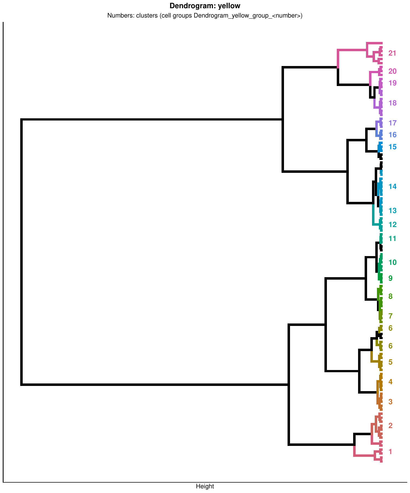
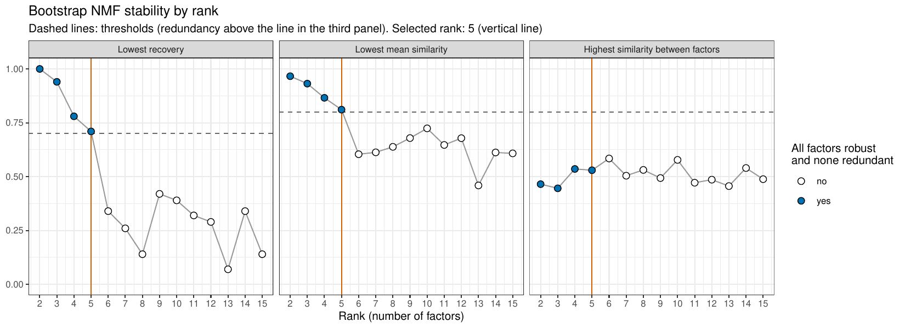
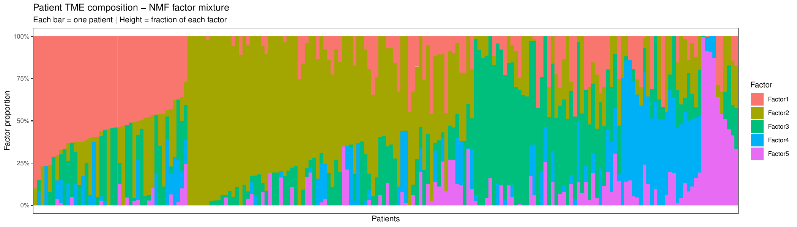
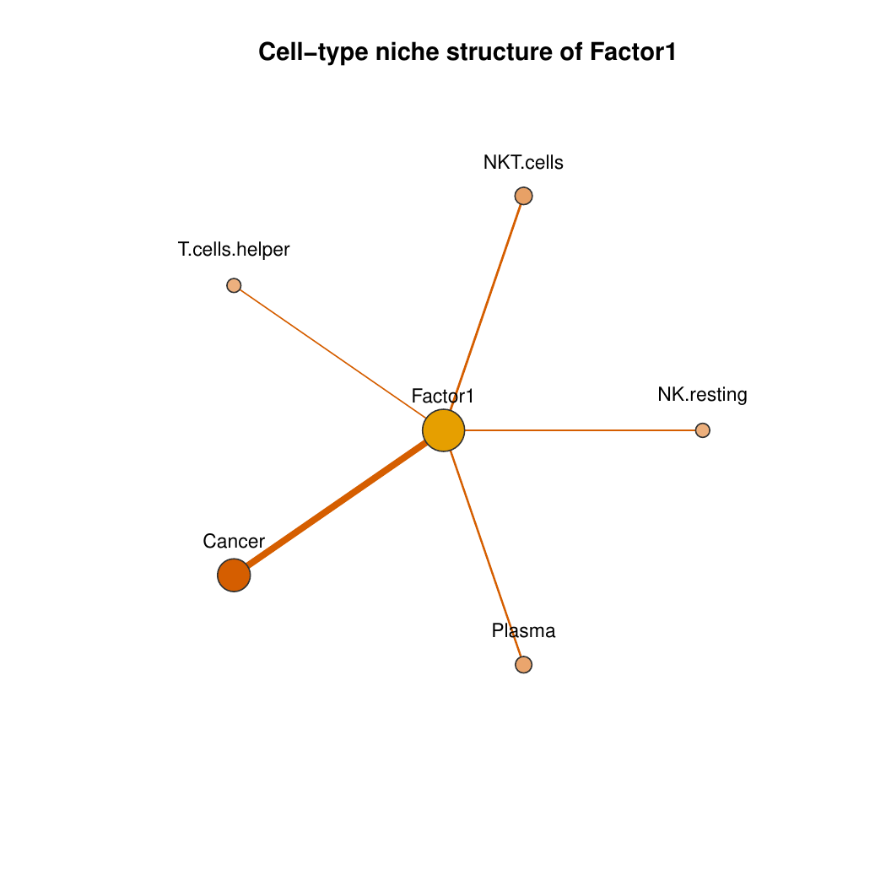
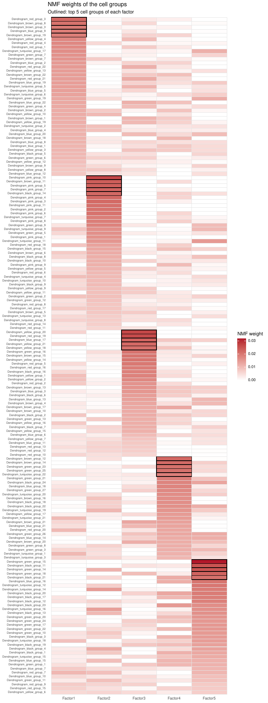

Cell groups and latent factors
a2_cell_groups.Rmd
library(CellTFusion)
#> Warning: replacing previous import 'S4Arrays::makeNindexFromArrayViewport' by
#> 'DelayedArray::makeNindexFromArrayViewport' when loading 'HDF5Array'
#> Warning: replacing previous import 'S4Arrays::makeNindexFromArrayViewport' by
#> 'DelayedArray::makeNindexFromArrayViewport' when loading 'SummarizedExperiment'
#> This tutorial covers the core steps of CellTFusion:
building cell groups from TF modules and deconvolution features,
extracting latent factors and characterizing cell niches. It uses two
objects from the Feature
computation tutorial:
-
network— TF co-activity modules fromcompute.WTCNA(). -
dt— deconvolution subgroups frommultideconv::compute.deconvolution.analysis().
Cell groups
construct_cell_groups() correlates each TF module with
the deconvolution features, clusters the significantly correlated
features of each module, and cuts the dendrograms into cell
groups. Features are clustered on the value of their
correlation with the module, so a cell group is a set of features with a
similar biological activity: features related to the same TF module to
the same degree, which do not need to vary together across samples. Each
cell group covers a single range of correlation values: the dendrogram
is cut with a dynamic tree cut, clusters made of separated ranges are
split, and pieces smaller than min_cluster_size are joined
to the neighbouring group with the closest correlation. Each cell group
gets a composite score per sample: the first canonical component of a
canonical correlation analysis (CCA) between the group’s deconvolution
features and the score of its TF module, i.e. the combination of the
features that correlates most with the module score. The score is
oriented to be aligned with the TF module: a positive score means that
the sample is on the active side of the module for that cell group, a
negative score that it is on the inactive side.
Key arguments:
-
network,dt— the inputs above. -
batch— optional cohort vector (see Multi-cohort analysis). -
pval— p-value threshold to select the deconvolution features significantly correlated with each module. -
file_name/return— withreturn = TRUE(default), the colored dendrograms are saved toResults/Dendrogram_color_clusters_<file_name>.pdf, and the composition and the scores of the cell groups toResults/Cell.groups.composition_<file_name>.csvandResults/Cell.groups.scores_<file_name>.csv.
cell_groups <- construct_cell_groups(
network = network,
dt = dt,
pval = 0.05,
clustering_method = "ward.D2",
file_name = "Tutorial"
)One dendrogram is drawn per TF module, showing how its correlated
deconvolution features cluster into cell groups. The leaves are drawn in
the order of their correlation with the module as far as the tree
allows, and the groups are numbered from the lowest to the highest
correlation. The number written next to each group is the one in the
cell group name
(Dendrogram_<module>_group_<number>); a group
that the tree splits into two places is drawn, and numbered, in both.
Features that are not assigned to any cluster are not part of any cell
group:

construct_cell_groups() returns a named list:
| Element | Description |
|---|---|
Cell_groups |
Data frame of composite scores (samples x cell groups) |
Composition |
Deconvolution features in each cell group |
Weights |
CCA projection parameters of each group (xcoef,
train_means, train_sds; only
xcoef with batch), used to score new
samples |
Re-running with precomputed features
CellTFusion() accepts precomputed dt,
tfs and pathways, for example from a previous
run (res$Processed_deconvolution,
res$TFs_matrix, res$Pathways_scores). The
corresponding steps are then skipped, which is useful to try different
module or cell group parameters without recomputing the features:
res_rerun <- CellTFusion(
raw_counts = raw.counts,
normalized = TRUE,
dt = res$Processed_deconvolution,
tfs = res$TFs_matrix,
pathways = res$Pathways_scores,
corr_mod = 0.8, # e.g. merge modules more readily than the default 0.9
min_module_size = 10,
pval = 0.05,
return = TRUE
)Latent factors
compute.latent_factors() decomposes the cell group
scores into non-negative latent factors with NMF. Only the positive part
of each score is used, max(score, 0): how far the sample is
on the active side of the group’s TF module (negative scores become 0),
so the factors describe the high-activity direction of the cell groups.
If rank = NULL, the number of factors is chosen among
ranks (2 to 15 by default, never more than the number of
cell groups) with bootstrap NMF: for each rank, NMF is fitted on all the
patients and on n_boot (100) bootstrap samples of the
patients, and the factors of each run are matched to the reference
factors by the cosine similarity of their profiles (their weights on the
cell groups). Each factor gets its recovery frequency (proportion of
runs in which it is found, similarity >=
similarity_thresh) and its mean similarity; a factor is
robust when both pass the thresholds (recovery_thresh = 0.7
and similarity_thresh = 0.8 by default, starting points
rather than universal cutoffs). Two factors of the same rank with very
similar profiles are flagged as redundant. The selected rank is the
largest one whose factors are all robust and none redundant: as many
factors as the data support reliably (low ranks capture the dominant
patterns and are almost always stable, so the smallest stable rank would
favour 2). rank_selection reports every candidate rank and
stability the factors of the selected one; when two
adjacent ranks are similarly good, check whether the main factors
persist at the neighbouring rank.
latent_spaces <- compute.latent_factors(
scores = cell_groups$Cell_groups,
rank = NULL,
seed = 123,
file_name = "Tutorial",
return = TRUE
)
head(latent_spaces$Z) # samples x factors
latent_spaces$rank_selection # stability and redundancy of each candidate rank
latent_spaces$stability # recovery and mean similarity of each factorWith return = TRUE, the stability of each candidate rank
is plotted
(Results/NMF_rank_stability_<file_name>.pdf, followed
by a page with the recovery and mean similarity of each factor of the
selected rank). On the tutorial data, ranks 2 to 5 have all their
factors robust and none redundant, and stability drops from rank 6, so 5
factors are kept:

The result contains Z (factor scores, samples x factors
— the input for statistics), W (weights of each cell group
in each factor), nmf_input (the positive part of the
scores), the NMF model, the per-sample factor proportions and the
stability tables. The NMF approximates the transposed input as
W %*% diag(d) %*% t(Z): each column of W and
each column of Z sums to 1, and the size of each factor is
in nmf_model$d. Tests on one factor at a time do not depend
on this scaling; the factor proportions of each sample (Z
multiplied by d, divided by its sum per sample) take the
sizes into account. project_factors() projects the cell
group scores of new samples (from compute.test.set()) onto
the factors, on the scale of Z. With
return = TRUE, the mixture of factors in each sample is
plotted:

Cell niches
compute_cells_niches() characterizes each latent factor
by the cell groups that contribute most to it: the top_n
cell groups with the highest weight in the factor (W),
described by their deconvolution features and the CCA coefficients of
these features in the cell group scores. The deconvolution features are
kept as they are (subgroups are not expanded into their members).
cells_niches <- compute_cells_niches(
latent_factors = latent_spaces,
cell_groups = cell_groups,
top_n = 5,
return = TRUE,
file_name = "Tutorial"
)The result has one row per factor, cell group and feature
(factor, cell_group, module,
weight, feature, coefficient).
For each factor, a tree network is saved (one page per factor): the
factor on the left, its top cell groups in the middle (coloured by their
TF module) and their features listed on the right. Edges are the CCA
coefficients: red when the feature is higher in samples where the cell
group is active, blue when it is lower; coefficients close to zero are
thin. Features correlated with each other (e.g. several estimates of the
same cell type) share their weight, so a single small edge with the
opposite colour of its cell group should be read together with the rest
of the group.

A heatmap shows the NMF weights of all the cell groups in all factors (cell groups ordered by the factor where their weight is highest; outlined: the top cell groups of each factor), so that cell groups shared between factors can be seen:

Next steps
With the cell group scores and the latent factors you can:
- test associations with clinical variables — Statistical analysis;
- use the cell group scores as features for prediction — Machine learning workflows.